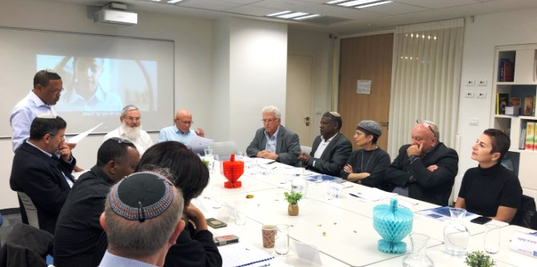
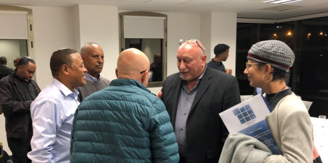

"מוכנים למחר" הוא המיזם החינוכי של "התנועה הלאומית למען שוויון הזדמנויות ליהודי אתיופיה" – עמותה שיסד
יפת אלמו ואשר שמה לה למטרה לפעול לקידום ערכי יסוד של שוויון, צדק ומוביליות חברתית באמצעות חינוך והשתלבות בתעסוקה. "מוכנים למחר" מבקש לקדם, להעצים ולהכשיר בני נוער וצעירים בני הקהילה האתיופית בישראל לעיסוק במקצועות חופשיים, בעיקר בתחומי הבריאות והרפואה. יפת, שעובד כאח בבית חולים הדסה, מכיר את המחסור הגדול בכוח אדם במקצועות הבריאות והרפואה, וכן את היעדרה של נציגות מספקת מקרב בני העדה האתיופית במקצועות אלו. הוא רואה במצב הקיים אתגר וגם הזדמנות ליצור שינוי באמצעות הכשרה והכוונה של נוער וצעירים מבני העדה למקצועות אלו – כך יינתן מענה לצורך של שוק התעסוקה, תינתן הזדמנות לבני הקהילה האתיופית לתעסוקה איכותית ומקצועית, ותיווצר הנגשה תרבותית של מוסדות הבריאות לציבור העדה.

יחידת בוגרי מנדל מלווה את יפת בתהליך פיתוח היוזמה, כחלק מהתמיכה בתהליך ההתפתחות המקצועית שבוגרי מנדל זוכים לה מרגע סיום לימודיהם בתכנית, במטרה לחזק את יכולתם לממש ולהטמיע את חזונם המקצועי לטובת החינוך והחברה בישראל.
ד"ר יהודה מימרן, בוגר מחזור ג' של בית ספר מנדל למנהיגות חינוכית ויועץ ביחידת הבוגרים, מלווה את יפת כיועץ אסטרטגי בתהליך הקמת המיזם. ד"ר מימרן דיבר במפגש על חשיבות מיזם "מוכנים למחר" לקידום הנוער ולצמצום פערים חברתיים בקרב העולים מאתיופיה, ועל הקשר בין מצוינות חינוכית לאחריות חברתית.

למפגש הזמין יפת אנשי רפואה, משפט, אקדמיה, מנהיגים ויזמים מקרב הקהילה האתיופית ומחוצה לה.
ד״ר יחזקאל קן, מנכ"ל המרכז הרפואי הרצוג, סיפר על הצלחת תוכניות ההכשרה למקצועות הסיעוד שמקיים המרכז ועל תרומתן למרכז ולמשתתפים. אלה מקבלים הזדמנות לעסוק במקצוע המסב להם גאווה, פרנסה יציבה ואפשרות לקידום. הוא ציין שזו רק דוגמה אחת להכשרה למקצועות הבריאות, והביע תמיכה בכוונת המיזם להרחיב את המנעד לכלל מקצועות הבריאות והרפואה כדי להגדיל את חופש הבחירה. מנכ"ל בנק יהב,
שאול גלברד, אמר כי למיזם פוטנציאל להתרחב ולכלול תחומים ודיסציפלינות נוספות של חינוך למצוינות כמו טכנולוגיה, ספורט, פיננסים ועוד.
נפתלי אברהם, עד לאחרונה מנכ"ל טק-קריירה וכיום מנכ"ל התאגיד הממלכתי "מרכז מורשת יהדות אתיופיה", הציג מודל של יוזמה שהתמקדה בדיסציפלינה אחת, וסיפר על הצלחת מרכז ההכשרה הטכנולוגי לצעירים יוצאי אתיופיה ועל השתלבותם ההולכת וגדלה בתעשיית ההיי-טק בישראל: מארבעה עובדי היי-טק יוצאי אתיופיה בשנת הקמת טק-קריירה (2002) ועד מאות צעירים וצעירות ממוצא אתיופי המשולבים בהיי-טק הישראלי כיום (שיעור ההשמה של המרכז הוא כ-89%).

ד"ר שמחה גתהון, יו"ר התאגיד הממלכתי "מרכז מורשת יהדות אתיופיה", שניהלה בעבר את התחום הרב-תרבותי בעמותת עלם לנוער בסיכון, דיברה על המוטיבציה הגדולה שיש לבני נוער מקרב הקהילה האתיופית להתקדם ולהתפתח ועל הצורך לטעת בהם אמון ותקווה.
השופט בדימוס שלמה שוהם הדגיש את החשיבות שבמתן חופש בחירה ומגוון אפשרויות, והציע להתמקד בקהל היעד ולא במטרה.
דורון הרן, המשנה לראש הקריה האקדמית אונו לפיתוח משאבים, ועו"ד זאב קאסו, ראש מנהל תוכנית יוצאי אתיופיה במכללה וגזבר העמותה, סיפרו על הצלחתם של סטודנטים בני הקהילה האתיופית במכללת אונו ועל מודל הפעולה הפרגמטי שלה, היוצר תשתית להצלחה. במפגש נכחו יותר מ-20 משתתפים, והמשוב שנתנו יסייע בפיתוח היוזמה.

שני דוברים מרגשים במיוחד היו
ד"ר דניאל מששה, צעיר בן העדה האתיופית שסיים לאחרונה את לימודיו בבית הספר לרפואה של הדסה וסיפר על המסע המיוחד שלו לתואר הנכסף, ואסתר וקסלר, בימאית מוערכת בארץ ובעולם, בתו של יפת, שהקרינה קטע קצר שביימה, המבוסס על חוויות ילדותה בבית הספר. היא סיפרה כיצד אביה סיפק לה רוח גבית ותמך בה להשיג הישגים, לעמוד על שלה ולהאמין בעצמה.
ד"ר שרית ברזילי, בוגרת בית ספר מנדל למנהיגות חינוכית ובת מחזורו של יפת אלמו, העוסקת בהבניית סיפורי חיים, סיפרה על היכרותה רבת השנים עם יפת ועל איכויותיו כמנהיג.
איילה בבלי, מנהלת העריכה ביחידת בוגרי מנדל, הציגה את היחידה ואת השותפות עם יפת והנחתה את הדיון.
{kind=link}
{kind=link}